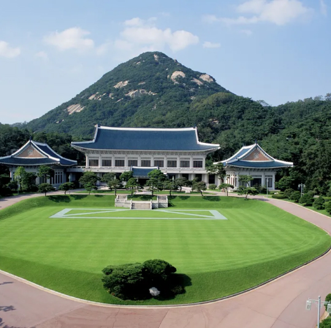
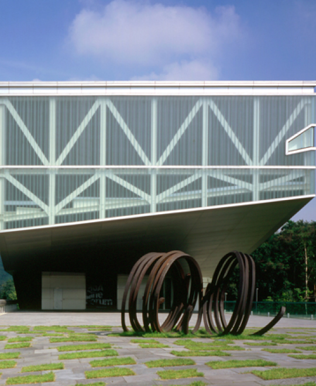
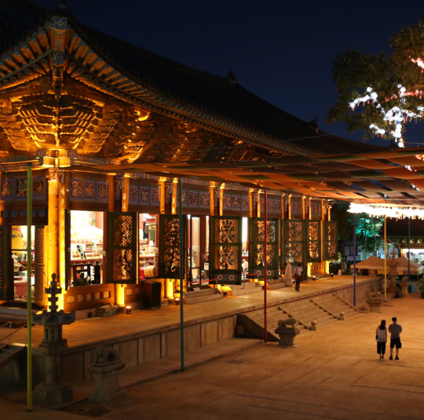

SPECIAL
Tourist attraction
- Seoul is a city where modernity and tradition harmoniously coexist.
You can enjoy stunning city views from Lotte Tower and Namsan Tower.
At Dongdaemun Design Plaza (DDP), you can experience unique architecture and various exhibitions,
and at the National Museum of Korea and the Seoul Museum of Art, you can immerse yourself in rich art and history.
Historical sites like the Seoul National Cemetery, Bongeunsa Temple, and Seodaemun Prison History Hall offer a glimpse into Seoul's profound history.
Seoul is a city
that blends rich history with modern charm.
In 1988, Seoul was selected as the host city for the Summer Olympics,
and in 1995, Jongmyo, a UNESCO World Heritage Site, was inscribed. In 2012,
it was designated as the Design Capital,
gaining recognition as a global hub for design and creativity.
Furthermore, Seoul has evolved into a smart city,
providing advanced technology and convenient urban living.
It has also established itself as a hub for international culture and arts.
-
- Lotte World Tower
-
Lotte World Tower is a 555-meter-tall landmark symbolizing modernity and tradition in Korea. With facilities like Seoul Sky and Signiel Seoul, it offers a top-notch destination for modern shopping and entertainment experiences in Seoul.
-
05551 300, Olympic-ro (Sincheon-dong), Songpa-gu
-
- Namsan Seoul Tower
-
Namsan Seoul Tower, built in 1969, is a cherished landmark since opening to the public in 1980. Its highlights include digital art displays, a 360-degree panorama Digital Observatory, and the romantic "Locks of Love" adorned Roof Terrace.
-
04340 105, Namsangongwon-gil, Yongsan-gu
-
- Dongdaemun Design Plaza
- Dongdaemun Design Plaza (DDP), initiated by Seoul in 2006, opened on March 21, 2014, aiming to drive innovation through design-thinking and showcase 21st-century creativity and global trends.
-
04566 281, Euljiro, Jung-gu, Seoul (Euljiro 7-ga)
-
- Gwanghwamun Square
-
King Taejo founded Gyeongbokgung Palace and the Street of Six Ministries in Hanyang in 1394. Gwanghwamun Square, reopened in 2009, hosts cultural landmarks like the statue of King Sejong amidst artificial ponds, fountains, and Seoul's symbols.
-
03172 B 175, Sejong-daero, Jongno-gu
- 
- Cheongwadae
- Cheongwadae, South Korea's presidential residence, opened to the public in June 2022, attracting tourists. The main building houses the President's office, while online tour reservations are available despite Tuesday closures.
-
03048 1, Cheongwadae-ro, Jongno-gu
-
- 63 Building
-
At the 63 Building's observatory, 63 Sky Art offers breathtaking views of Seoul and impressive artworks. Don't forget to visit the Wishing Wall to share your wishes with others.
-
07345 50, 63-ro, Yeongdeungpo-gu
-
- COEX
-
This convention center offers a large conference hall for international events and a Grand Ballroom accommodating 2,000 guests, providing customized banquet services with modern facilities.
-
06164 513, Yeongdeung-daero, Gangnam-gu

- Hangaram Art Museum
- The Hangaram Art Museum at Seoul Arts Center is a spacious venue designed for large-scale artworks, featuring exhibition halls, an art library, and a shop. It hosts various arts programs and a design market as part of the center's offerings.
-
06757 2406, Nambusunhwan-ro, Seocho-gu
-
- Leeum Museum of Art
- The Leeum Museum showcases traditional and contemporary art from its founder's collection, featuring architecture by Maria Botta, Jean Nouvel, and Rem Koolhaas. Comprising three buildings, it harmonizes art, architecture, and nature, offering diverse programs.
-
04348 60-16, Itaewon-ro 55-gil, Yongsan-gu
-
- National Museum of Art at Deoksugung Palace
- The National Museum of Modern and Contemporary Art at Deoksugung showcases Western architecture and an outdoor garden, featuring works from Korean and international artists with varied admission fees.
-
04519 99, Sejong-daero, Jung-gu
-
- National Museum of Modern and Contemporary Art, Seoul
- The newest branch of the National Museum of Modern and Contemporary Art (MMCA) in Seoul focuses on global contemporary art, providing diverse facilities to engage with the public and support new artistic endeavors.
-
30, Samcheong-ro, Jongno-gu
-
- Seoul Museum of Art
- Seoul Museum of Art (SeMA), founded in 1988, is a leading venue for world-class exhibitions and artistic endeavors, known for its iconic architecture, central location, and support for emerging Korean artists.
-
04515 61, Deoksugung-gil, Jung-gu
- 
- Seoul National University Museum of Art
- Seoul National University's MoA, designed by Rem Koolhaas, seamlessly blends art and education, offering diverse cultural experiences in its unique translucent glass structure.
-
1 Gwanak-ro, Gwanak-gu, Seoul, 08826
-
- Bank of Korea Money Museum
- The Bank of Korea Money Museum offers insights into the money-making process and Korean economic development through its vast collection of over 20,000 Korean and foreign banknotes, coins, and tokens across four exhibition halls, with free admission.
-
100-794 39 Namdaemun-ro, Jung-gu

- The National Museum of Korea
- The National Museum of Korea displays Korea's rich history and culture with 420,000 artifacts, offering immersive experiences with digital technology, perfect for a day of exploration with loved ones.
-
04383 137, Seobinggo-ro, Yongsan-gu
-
- National Folk Museum of Korea
- The National Folk Museum of Korea showcases Korean culture and history from prehistoric times to the Joseon Dynasty's end through various activities in a traditional Korean-style building at Gyeongbokgung Palace.
-
03045 37, Samcheong-ro, Jongno-gu
-
- Kyung Hee University Natural History Museum
-
Kyunghee University Natural History Museum, founded in 1978, promotes urban harmony with nature through its vast collection of nearly 90,000 specimens, offering educational programs on nature preservation and biodiversity awareness.
-
02447 26, Kyungheedae-ro, Dongdaemun-gu
-
- Seodaemun Museum of Natural History
- Seodaemun Museum of Natural History, Korea's first public museum of its kind, opened in 2003, offers a family-friendly experience with real specimens, models, and life-size dinosaur replicas showcasing the origins of life on earth.
-
03718 51, Yeonhui-ro 32-gil, Seodaemun-gu
-
- National Palace Museum of Korea
-
The National Palace Museum of Korea exhibits 500 years of Joseon Dynasty history through 45,000 artifacts, including royal texts, robes, and the royal vehicle of Emperor Sunjong, offering a learning program for all ages to experience Korea's royal culture.
-
03045 12, Hyoja-ro, Jongno-gu
- 
- Jogyesa Temple
- Jogyesa Temple in central Seoul is a hub of Korean Buddhism, featuring the iconic Daeungjeon Hall with a revered Buddha statue and a 500-year-old white pine tree. It offers temple stays and hosts the Lotus Lantern Festival for cultural immersion.
-
03144 55, Ujeongguk-ro, Jongno-gu
-
- Seodaemun Prison History Hall
- Seodaemun Prison History Hall, established in 1998, commemorates Korean patriots' sacrifices during Japanese occupation, symbolizing Korea's quest for freedom.
-
120-080 251, Tongil-ro, Seodaemun-gu
-
- Seoul National Cemetery
-
Seoul National Cemetery, honoring fallen Korean patriots, features the War History Museum, Memorial Tower, and Memorial Hall, with annual memorial services held on June 6th for Korean Memorial Day.
-
06984 210, Hyeonchung-ro (Dongjak-dong), Dongjak-gu
-
- Dosan Park
- Dosan Park honors the legacy of Dosan Ahn Chang-ho, a revered patriot and educator in Korea, featuring his statue and a memorial hall showcasing his life and achievements.
-
06020 20, Dosan-daero 45-gil, Gangnam-gu
-
- Bongeunsa Temple
- Bongeunsa, a Buddhist temple founded in 794, offers cultural attractions, templestay programs, and the annual Lotus Lantern Festival, providing visitors with a tranquil retreat and opportunities for self-reflection.
-
06087 531, Bongeunsa-ro, Gangnam-gu
-
- Korea Central Mosque
- The Seoul Central Mosque serves as a place of worship and cultural education for Muslims in Korea, with prayer halls on the upper floors and open access for visitors.
-
04405 39, Usadan-ro 10-gil, Yongsan-gu